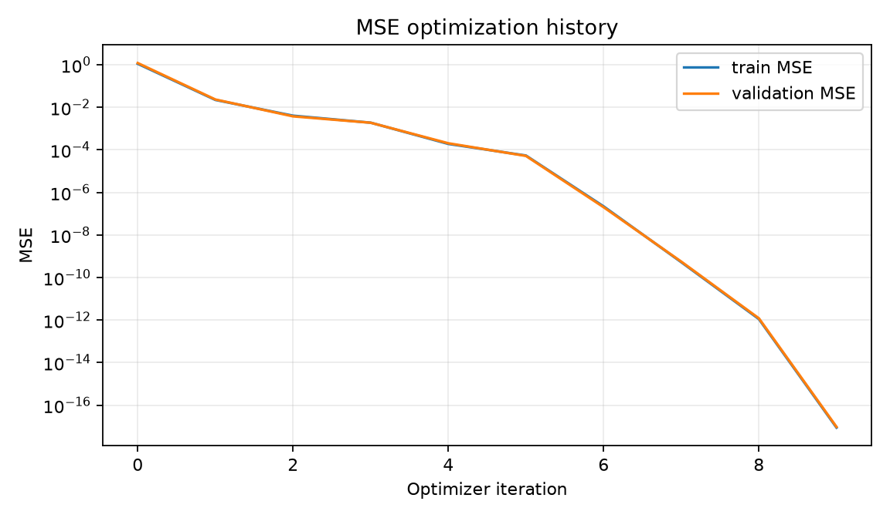
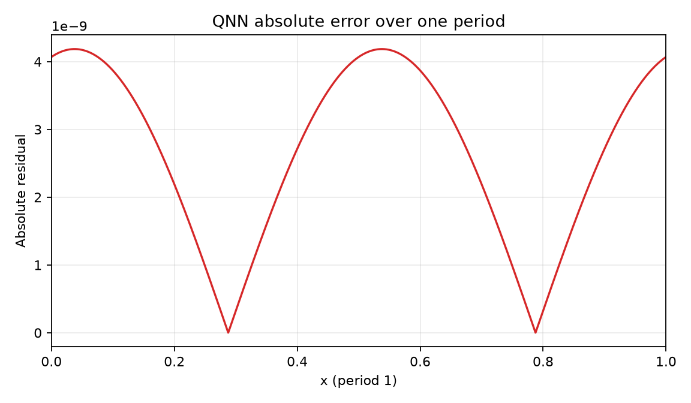
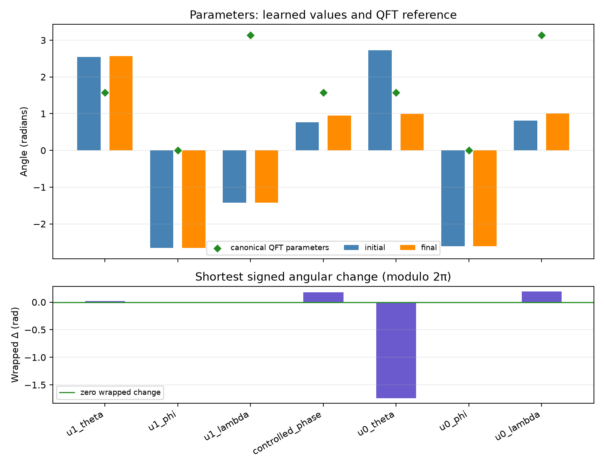

Comparison group: periodic-function-mse-zero-offset-multidataset-ry-angle-encoding-z1-readout
Training loss: MSE only; no Frobenius/process-fidelity term or PINN residual.
Encoding: RY(2πx)|0⟩ on qubit 0, x∈[0,1), period 1.
Readout: ideal Pauli-Z expectation on qubit 1.
Absolute error over one period: mean=2.66467e-09, max=4.18565e-09; defined pointwise as |QNN prediction − target| on the 2048-point periodic grid.
{
"run_id": "20261017T014004789840Z_periodic-function-mse-zero-offset-multidataset_seed-0046_08a24406",
"status": "FINISHED",
"comparison_group": "periodic-function-mse-zero-offset-multidataset-ry-angle-encoding-z1-readout",
"protocol_version": "0.1.0",
"objective": "training-set mean squared error only",
"loss_excludes": [
"process fidelity",
"Frobenius/unitary alignment",
"PINN/physics residual",
"frequency labels"
],
"encoding": "RY(2*pi*x)|0> on q0; x in [0,1), period 1",
"ansatz": "qft2_trainable_u_cp_u_swap",
"readout": "Pauli-Z expectation on q1",
"seed": 46,
"data_seed": 314159,
"optimizer": "L-BFGS-B",
"iterations": 9,
"function_evaluations": 96,
"optimizer_success": true,
"optimizer_message": "CONVERGENCE: NORM OF PROJECTED GRADIENT <= PGTOL",
"elapsed_seconds": 0.08344662400486413,
"initial_train_mse": 1.1163712306938507,
"final_train_mse": 8.799953841770539e-18,
"validation_mse": 9.52721812193316e-18,
"test": {
"mse": 8.880584247132995e-18,
"rmse": 2.980030913788143e-09,
"r2": 1.0
},
"constant_baseline_test": {
"mse": 0.1898933590235803,
"rmse": 0.43576755159555,
"r2": -0.03270329551922346
},
"known_frequency_fourier_baseline_test": {
"mse": 7.351249449493811e-32,
"rmse": 2.7113187657473645e-16,
"r2": 1.0
},
"spectral_coefficient_mse_k0_to_16": 2.576423631598608e-19,
"dense_grid_absolute_error_mae": 2.6646674428337357e-09,
"dense_grid_absolute_error_max": 4.185651825139303e-09,
"target_peak_frequency": 1,
"predicted_peak_frequency": 1,
"frequency_peak_correct": true,
"qft_process_fidelity_diagnostic_only": 0.0038096885273694618,
"initial_qft_process_fidelity_diagnostic_only": 0.033182246779634494
}




